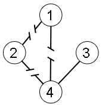

Given an undirected connected simple graph of N nodes and E edges. There are up to Q nodes selected from N nodes that are special nodes. Suppose that R selected edges are destroyed, your task is to calculate how many pairs of node A-B where A and B belong to special nodes, are disconnected (there is no path from A to B or vice versa after R edges are destroyed).
The first line of input contains an integer T (1 ≤ T ≤ 50) the number of cases. Each case begins with four integers N, E, Q and R (1 ≤ Q ≤ N ≤ 50,000; 0 ≤ R ≤ E ≤ 200,000) denoting the number of nodes, edges, special nodes, and destroyed edges respectively. The nodes are numbered from 1 to N. The next E line each contains two integers Ai and Bi (1 ≤ Ai, Bi ≤ N) representing an edge connecting node A and node B. The next line contains Q integers Pi (1 ≤ Pi ≤ N) denoting the selected special nodes. The next line contains R integers Ti (1 ≤ Ti ≤ E) denoting the edges that are destroyed (the edges are numbered from 1 to E based on input order).
For each case, output in a single line a number denoting the number of disconnected pair of special nodes.
|
Explanation for the 1st sample input
There 5 pair of special nodes that are disconnected: 1-2, 1-3, 1-4, 2-3 and 2-4.
Explanation for the 2nd sample input
There is only one special node, so we can't have any pair of them.